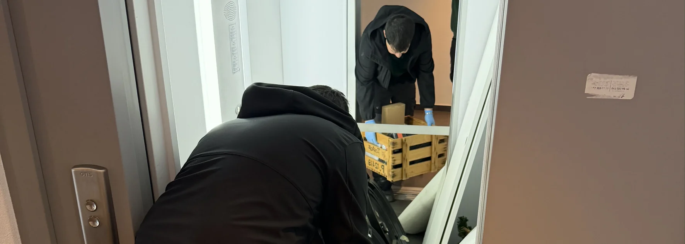

- Situation typique : vente conclue, remise des clés dans 5 jours, débarras sous-estimé
- Notre approche : deux entreprises, une seule famille (Malo Nettoyage et Malo Débarras)
- Priorité affichée : recyclage systématique et dons aux associations
- Rythme : visite conjointe + devis le jour même + intervention sous 48h
- Cas concret : maison 9.5 pièces vidée et nettoyée en 2 jours dans la Broye
Un scénario que nous rencontrons régulièrement
Vendre son bien immobilier est un projet chargé émotionnellement et administrativement. Une fois l'acheteur trouvé et le compromis signé, un délai serré s'enclenche : trois semaines à trois mois, parfois moins. Dans ce délai, il faut vider entièrement le logement, le nettoyer et le rendre en état.
Beaucoup de propriétaires abordent cette étape avec confiance : « J'ai le temps, je vais trier tranquillement. » Mais la réalité est souvent différente.
Ce que nous observons régulièrement chez nos clients vendeurs :
- Le tri prend beaucoup plus de temps que prévu (chaque objet évoque un souvenir)
- Le vide-grenier ou la vente en ligne donne des résultats décevants (les acheteurs cherchent aujourd'hui du mobilier moderne, pas du meuble ancien classique)
- La déchetterie devient tentante, mais laisser partir des objets fonctionnels dérange
- À J-5, la panique s'installe : il reste beaucoup à évacuer et un nettoyage complet à faire
C'est très exactement à ce moment que nos clients nous contactent.
Le cas : une maison de 9.5 pièces à 5 jours de la remise des clés
Voici le déroulé d'une intervention récente qui illustre bien la valeur du service coordonné.
La situation : un propriétaire d'une belle maison de 9.5 pièces sur trois niveaux, à Payerne, venait de vendre son bien. La remise des clés était fixée dans 5 jours.
Ses tentatives préalables : il avait commencé seul par un tri méthodique, puis organisé un vide-grenier. Le résultat a été décevant : les acheteurs recherchent aujourd'hui du mobilier plutôt moderne ou vintage bien ciblé, et une grande partie de ses affaires n'a pas trouvé preneur. Il s'est retrouvé avec un volume important d'objets, meubles et effets personnels encore à évacuer, très peu de temps devant lui, et un stress croissant.
Sa demande spécifique en nous appelant : il ne voulait absolument pas d'un débarras « tout à la déchetterie ». Sa priorité claire était le recyclage et les dons à des associations. C'est très exactement ce que nous faisons.
Comment s'est déroulée notre intervention
La visite conjointe : environ 1 heure
Nous nous sommes rendus sur place le lendemain de son appel. La visite a duré près d'une heure et nous a permis de :
- Prendre le temps d'échanger sur son histoire dans cette maison, ses attentes
- Évaluer étage par étage le volume et la nature des affaires
- Identifier avec lui ce qui devait le suivre dans son nouveau logement
- Repérer les objets qui pouvaient trouver preneur en association (jouets en bon état, mobilier fonctionnel, textiles propres, vaisselle)
- Anticiper le nettoyage final pour la remise des clés
Le devis envoyé le jour même
Une fois la visite terminée, nous avons établi et envoyé le devis dans la journée. L'objectif était clair : lui laisser le temps de le lire tranquillement et de nous répondre rapidement, pour que nous puissions bloquer immédiatement les créneaux dans notre planning.
Il nous a retourné le devis signé le jour même. Créneaux bloqués : intervention sur 2 jours consécutifs.
Jour 1 : débarras avec Malo Débarras
L'équipe de Malo Débarras (l'entreprise de notre frère) est intervenue avec le matériel adapté. Le tri s'est fait en direct avec le propriétaire, dans une logique de trois flux simultanés :
- La benne pour la déchetterie : uniquement les objets non revalorisables (mobilier cassé, matelas usés, déchets)
- La camionnette pour les dons aux associations : jouets, vêtements, meubles fonctionnels, vaisselle, livres — en respectant les critères d'acceptation des associations (jouets propres et complets, textiles en bon état, sans pièces manquantes)
- Le carton « à emporter » : ce que le propriétaire souhaitait conserver pour son nouveau logement
Une grande journée intense, mais avec un cadre clair. Aucun objet donné n'a fini à la déchetterie parce qu'il n'était pas trié ; aucun objet fonctionnel n'a été perdu par précipitation.
Jour 2 : nettoyage complet avec Malo Nettoyage
Une fois la maison entièrement vidée, l'équipe de Malo Nettoyage a pris le relais. Nettoyage complet de la maison sur les trois niveaux : sols, cuisine, sanitaires, vitres, plinthes, et toute la poussière fine générée par le débarras.
À la fin de la journée, tour complet de la maison avec le propriétaire pour valider le résultat. Il était satisfait de la qualité du travail et de la patience de l'équipe.
Un détail marquant : le nouveau propriétaire était également présent sur place le second jour (venu récupérer les clés). Voir la maison prête, propre et vidée dans les temps l'a beaucoup rassuré. Il nous a exprimé sa satisfaction spontanément.

Ce qu'il faut retenir de ce cas
Ce déroulement illustre plusieurs points concrets :
La coordination entre deux entreprises d'une même famille change tout
Nous sommes deux entreprises, une seule famille. Malo Nettoyage et Malo Débarras sont deux structures distinctes, dirigées par deux frères. Cette proximité n'est pas un détail : c'est ce qui permet la fluidité que d'autres prestataires ne peuvent pas offrir.
- Aucune négociation de planning entre nous : les créneaux sont bloqués côte à côte
- Aucune facturation croisée de coordination
- Confiance mutuelle entre les équipes, qui travaillent ensemble régulièrement
- Un seul interlocuteur pour le client, pour toutes les questions
Le tri intelligent économise du temps et respecte les objets
Le tri en direct avec le client, avec trois flux simultanés (garder / donner / déchetterie), évite les deux erreurs les plus courantes : jeter en trop grande quantité par manque de temps, ou tout garder par peur de mal jeter.
La rapidité de réponse fait la différence
Dans ce cas, la remise des clés était dans 5 jours. Une visite le lendemain, un devis le jour même, une intervention sous 48h : ce rythme est possible parce que nous avons des équipes disponibles pour ce type d'intervention, ce qui n'est pas le cas de tous les prestataires.
Vente immobilière en délai serré ? Débarras + nettoyage coordonnés
Deux entreprises, une seule famille · Recyclage et dons prioritaires · Devis en 24h
Voir le service fin de bail →Les situations où ce déroulement s'applique le mieux
Ce type d'intervention coordonnée est particulièrement adapté à :
| Situation | Enjeu principal |
|---|---|
| Vente immobilière avec remise des clés serrée | Ne pas dépasser le délai contractuel |
| Grande maison familiale à vider (2+ étages) | Volume important, tri exigeant |
| Vendeur âgé fatigué par le tri | Décharger la charge physique et émotionnelle |
| Héritiers vivant loin du logement | Confier avec confiance à distance |
| Propriétaire attentif à l'écologie | Valoriser le recyclage et les dons |
FAQ – Vente immobilière et débarras nettoyage
Combien de temps à l'avance faut-il nous contacter avant la remise des clés ?
Idéalement 2 à 3 semaines avant, pour un planning confortable. Mais nous intervenons régulièrement à moins d'une semaine du terme, comme dans ce cas. Nos équipes gardent des créneaux pour les demandes serrées, à condition d'appeler dès que le besoin se précise.
Peut-on vraiment tout donner aux associations ?
Non, elles ont des critères clairs. Une association ne peut pas accepter des objets abîmés, incomplets ou sales : elle devrait alors payer pour les éliminer, ce qui la met en difficulté. Nous connaissons les critères de chaque type d'association locale et trions en conséquence : jouets propres et complets, textiles en bon état, mobilier fonctionnel, vaisselle intacte.
Le vide-grenier fonctionne-t-il vraiment aujourd'hui ?
Cela dépend fortement de ce que vous vendez. Le mobilier ancien classique, la vaisselle courante et le linge de maison rencontrent peu de succès. Les acheteurs recherchent plutôt des pièces vintage identifiables (années 60-80 en particulier), du mobilier scandinave, ou des objets d'artisanat. Ne comptez pas sur le vide-grenier pour évacuer un volume important.
Qu'est-ce qui différencie votre offre de deux prestataires séparés ?
Deux entreprises, une seule famille. Cette structure fraternelle permet une coordination fluide, sans facturation intermédiaire ni planning à négocier entre les équipes. Vous avez un seul interlocuteur, un seul devis global, un enchaînement naturel entre le débarras et le nettoyage.
Intervenez-vous en dehors de Payerne pour des ventes immobilières ?
Oui. Nous couvrons toute la Broye, le canton de Vaud et le canton de Fribourg. Les délais et créneaux dépendent surtout de la période (haute saison en fin de mois notamment) et non de la distance dans notre zone d'intervention.
En résumé
Vendre sa maison et gérer soi-même le débarras avant la remise des clés est presque toujours plus long que prévu, surtout quand on ajoute la vente ou le don des affaires. Faire appel à un service coordonné débarras + nettoyage, avec deux entreprises d'une même famille, permet de tenir des délais serrés sans sacrifier ni la qualité, ni la valorisation des objets. Le cas décrit ici — une maison de 9.5 pièces vidée et nettoyée en 2 jours à Payerne, avec recyclage et dons prioritaires — n'est pas exceptionnel. C'est notre manière régulière de travailler.